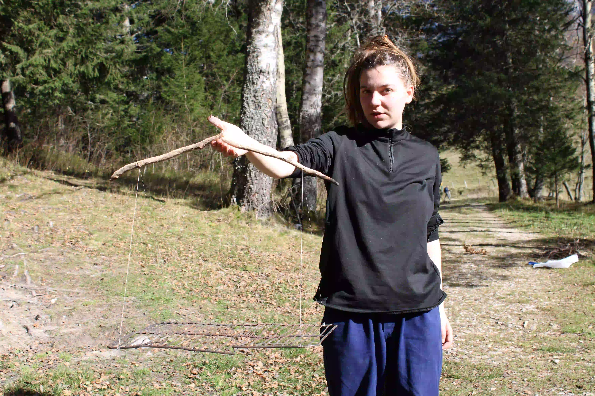
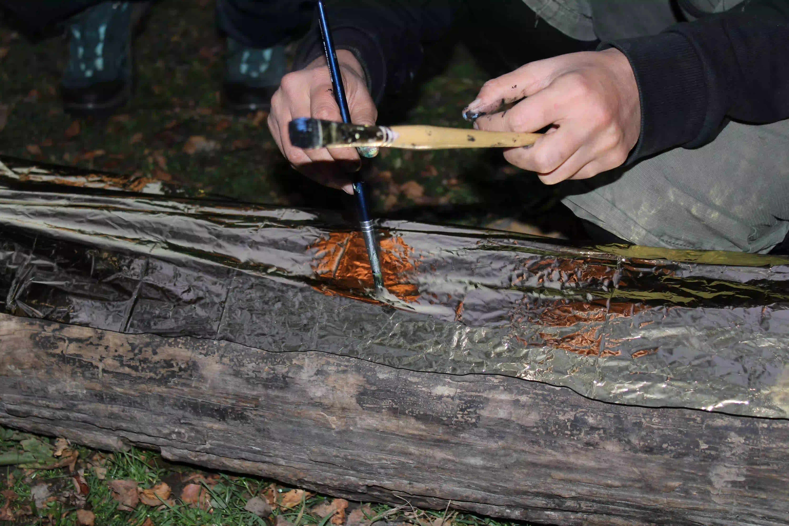
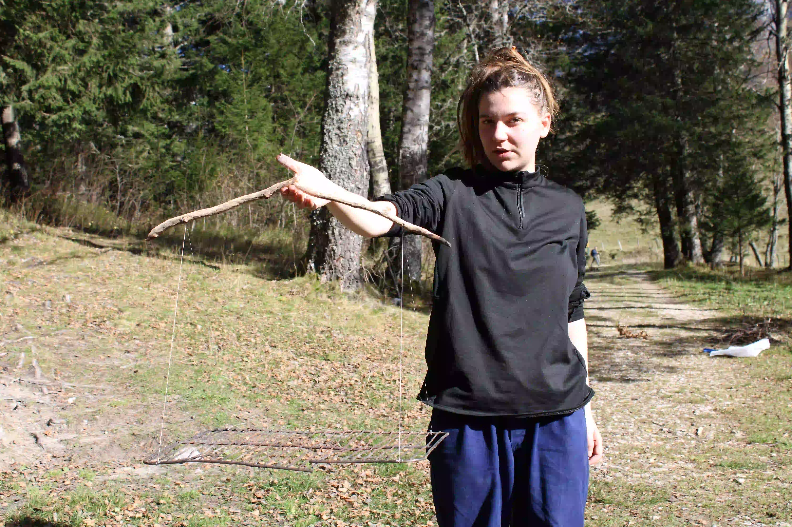
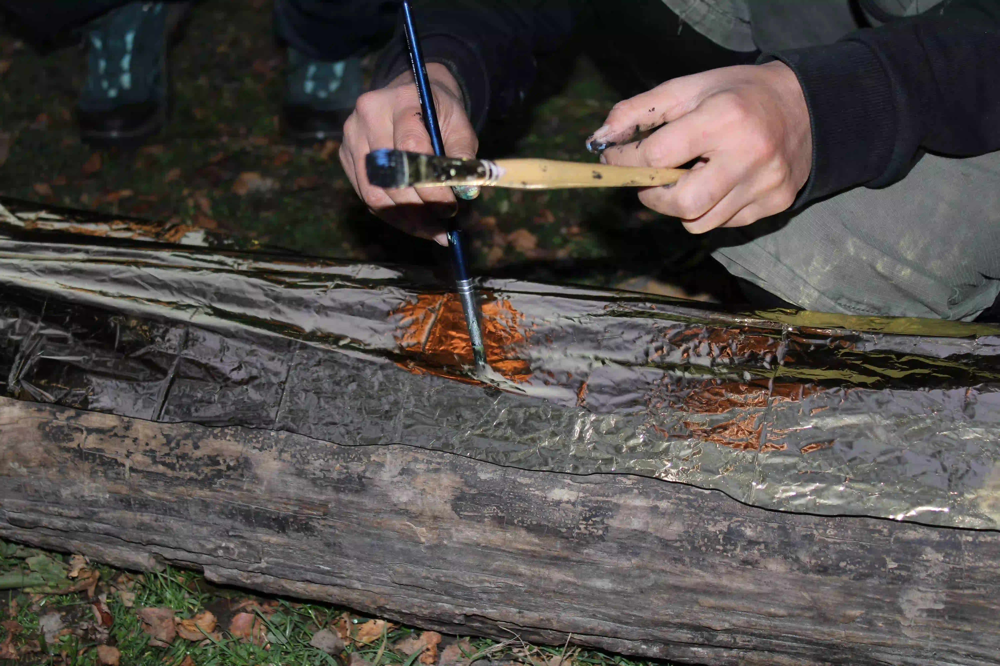

Procédé : marcher 4h de Prélenfrey à la cabane de la Fauge, puis y rester 4 jours
Ce site répertorie les expérimentations, dessins et créations réalisées puis laissées au refuge de la Fauge durant une résidence proposée par et pour des étudiant·e·s. Le projet s'est déroulé dans un refuge non-gardé, un espace collectif de passage mis à disposition par la mairie ou des locaux pour des promeneur·euse·s qui viennent s'y abriter, le temps d’un goûter, d’une soirée, voire d’une nuit. L'idée initiale du projet était de venir sur place dans les conditions d'un refuge et d'y laisser une trace ludique et étonnante à destination du prochain passant. Le Rag Rng répond à un besoin et une inquiétude suite à la multiplication des coupes budgétaires dans le domaine de la culture. Nous pressentons la nécessité de s'organiser en interne, en construisant et en trouvant des espaces de création accessibles. Le refuge de la Fauge était une cabane très fréquentée en journée. Nous avons eu du public pour nos performances, des regards lorsque nous peignions au bord de la route, et nous espérons avoir déclenché une vague de décorations au sein de la cabane.

 



Mains
Equipe de la première édition : Aldo Prost (Scénographie, ENSAD),
Roman Chaumont (Arts du métal ENSAAMA), Maïlis Leboulicaut (Performance ENSAD), Capucine Revéret (design industriel, ENSCI),
Elise Versiny Campinchi (design textile ENSAAMA), Marie Boulet (Graphisme ENSAAMA), Isaline Altisen (Scénographie ENSAD)